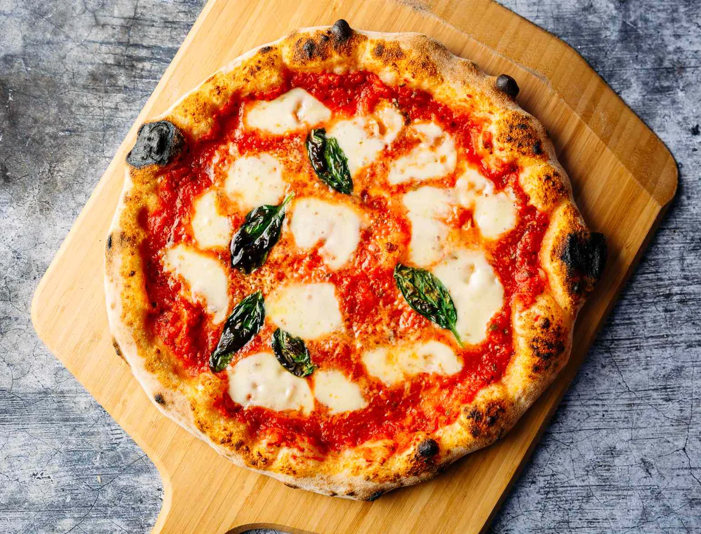

Margherita pizza is a thin-crust Naples-style pizza topped with tomato sauce, fresh mozzarella, basil leaves, and Parmigiano-Reggiano. It's easy to make at home, and you don't need a fancy oven or even a pizza stone to get pizzeria-quality results. I use a rich homemade pizza dough, a blazing hot oven, and a sheet pan to produce a crisp yet chewy pizza crust. The sauce is a speedy, no-cook Neapolitan pizza sauce made from canned San Marzano tomatoes; it has vibrant tomato flavor, and you can whip it up in 5 minutes.
